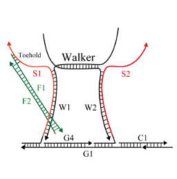
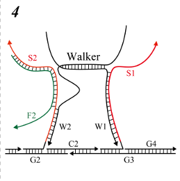

We designed a system to move the DNA origami structure via DNAWalker, as was previously described [1]. DNAWalker is a structure in which two DNA strands are partially hybridized, and each single strand represents a leg. In addition, the scaffolds are designed to form partial complementary sequences in a hairpin structure so that they do not bind, even if fuel DNA is added. However, S1 and S2 had exactly the same base sequence, and it is not known whether the DNAWalker reaction proceeds from the left foot or the right foot. The DNAWalker would be dangling when it moves forward from the right foot (w2), resulting in an undesired reaction system. As a solution to this problem, we utilized mismatched base pairs. Specifically, we replaced a sequence with one that was not fully complementary to ensure that unintended chains did not bind to each other. When chains joined to form a double strand, since there were many complimentary combinations in each strand, they were combined, and the combination was intentionally reduced to make it uncoupled.
The principle of DNAWalker with a mismatched base pair is explained below. Mismatched base pairs were incorporated into the base sequence to satisfy the specifications indicated in Table 1. The symbol ◯ indicates a successful combination, and the X symbol indicates that the components were not successfully combined. For example, S1 and F1 were coupled, whereas S1 and F2 were not.
| Strands | S1 | S2 | F1 | F2 |
|---|---|---|---|---|
| S1 | × | × | 〇 | × |
| S2 | × | × | × | 〇 |
| F1 | 〇 | × | × | 〇 |
| F2 | × | 〇 | 〇 | × |
First, the left leg (W1) and right foot (W2) were combined in different arrangements; DNAWalker scaffolds were arranged in different steps, as described below, and the left leg (W1) and S1, followed by the right leg (W2) were designed. F1 and S1 combined to dissociate W1, and dissociated W1 and S2 then combined to move DNAWalker. The detailed reaction procedure is described in eight steps below.
In this process, we aimed to peel away S1 and W1 and float the left foot (W1).
- initial state
- S1 and F1 joined in the toehold region 
-
Binding progressed between S1 and F1

-
In the chain substitution reaction of W1 and F1, W1 and F2 dissociated

-
F1 and S1 were combined, and W1 was dangling

In this process, the goal was to combine Spot1 with the left foot lifted in step 1 in order to advance one step.
- Initial state
- Dangling W1 searched for complementary sequences
-
W1 and Spot1 joined in the toehold region

-
The binding of W1 and Spot 1 disrupted the hairpin structure, allowing DNAWalker to move one step

In this process, we aimed to peel away W2 and S2 and allow W2 to float.
- Initial state
-
S2 and F2 joined in the toehold region

- Binding progressed between S2 and F2
-
In the strand displacement reaction of S2 and F2, W2 dissociated

- F2 and S2 were combined, and W2 was dangling
In this process, the right foot (W2) that floated in step 3 was combined with Spot2, and the goal was to progress one step further.
- Initial state
- Dangling W2 searched for complementary sequences
-
W2 and Spot2 joined in the toehold region

- The binding of W2 and Spot2 collapsed the hairpin structure. As a result, DNAWalker moved one step.
The subsequent step proceeded only when Fuel was not completely consumed; if the initial concentration of Fuel was low, the reaction would proceed until step 4.
In this process, we aimed to peel away S1 and W1 and float the left foot (W1).
-
Initial state

- S1 and F1 joined in the toehold region
- In the chain substitution reaction between S1 and F1, F2 started to dissociate
-
In the chain substitution reaction of W1 and F1, W1 and F2 dissociated

-
F1 and S1 were combined, and W1 was dangling

In this process, the goal was to combine Spot3 with the left foot lifted in step 5 in order to advance one step.
-
Initial state

- Dangling W1 searches for complementary sequences
-
W1 and Spot3 joined in the toehold region

- The binding of W1 and Spot3 collapsed the hairpin structure, allowing DNAWalker to move one step
In this process, we aimed to peel away W2 and S2 and allow W2 to float.
-
Initial state

-
S2 and F2 joined in the toehold region

-
Binding progressed between S2 and F2

- In the strand displacement reaction of S2 and F2, W2 dissociated 
- F2 and S2 were combined, and W2 was dangling
In this process, the right foot (W2) floated in step 7 was combined with Spot4, and the goal was to progress one step further.
-
Initial state

- Dangling W2 searches for complementary sequences
- W2 and Spot4 joined in the toehold region
-
By combining W2 and Spot4, Output was released, allowing DNAWalker to move one step.